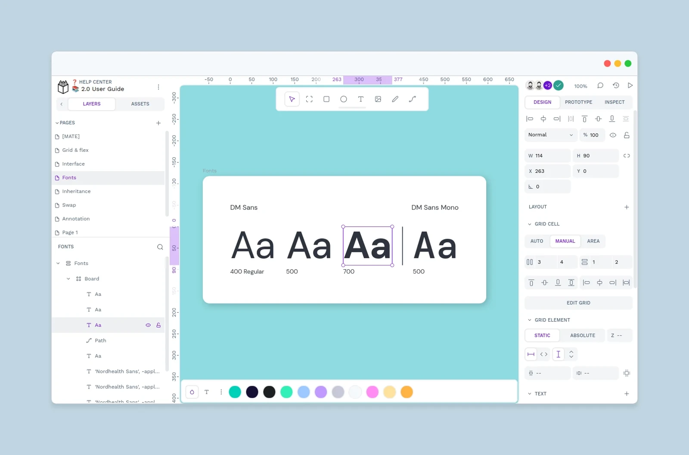
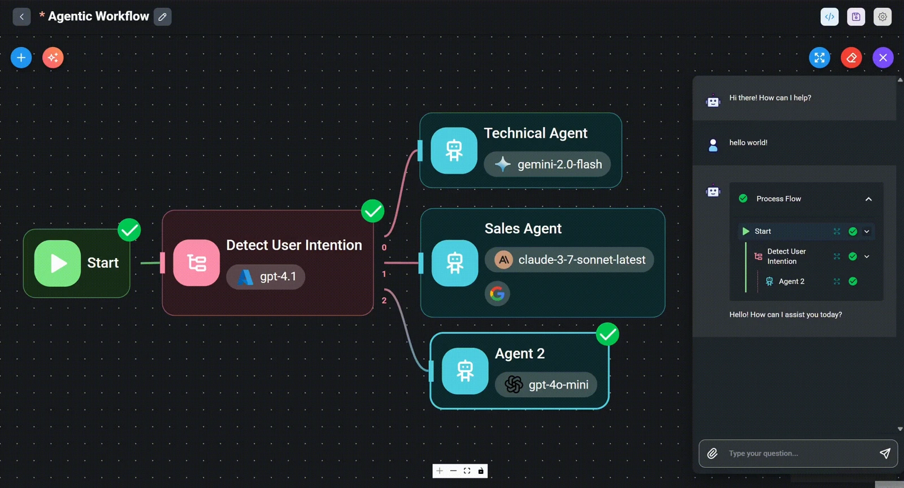
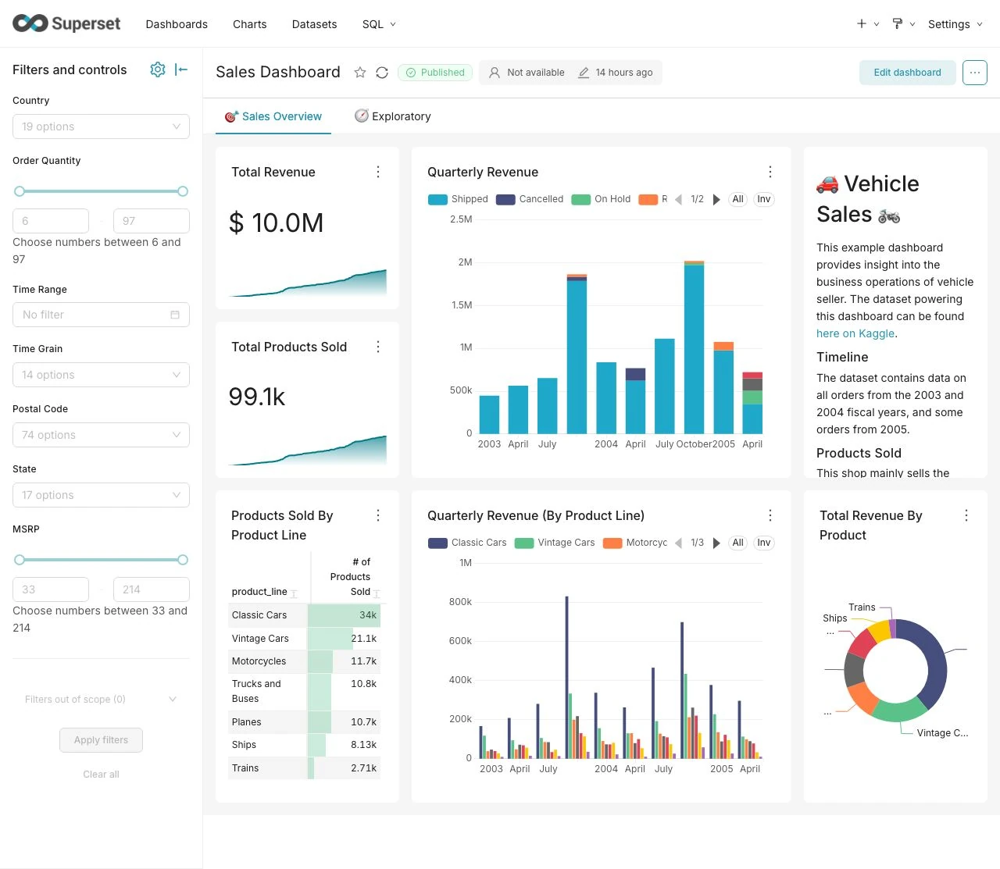
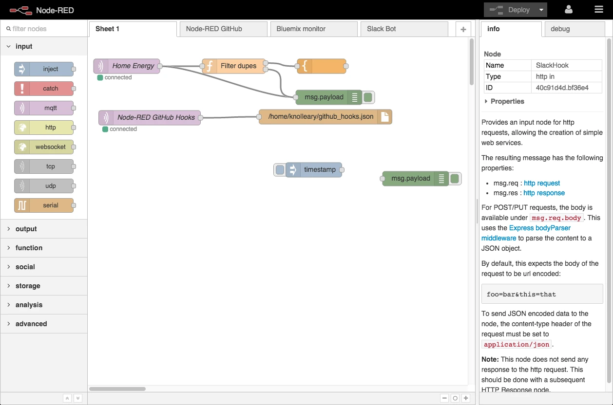
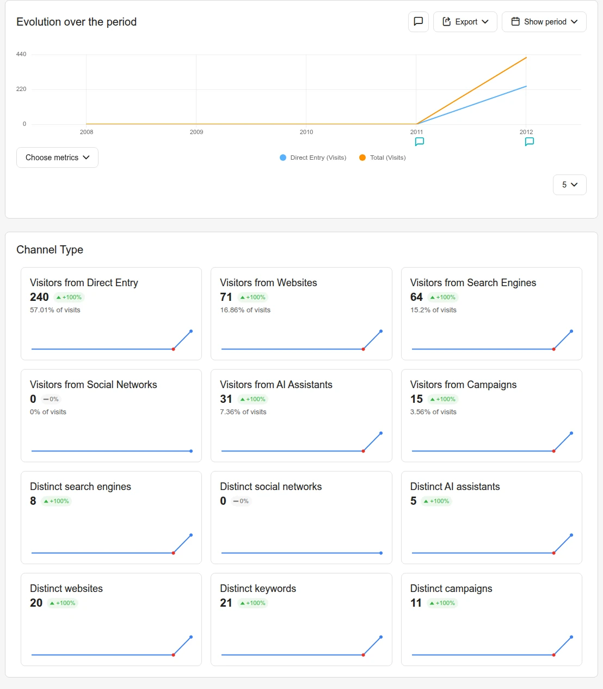

WORKFLOW
모듈은 이런 순서로 이어 씁니다
단계를 누르면 관련 모듈 분류로 이동합니다. 도구를 단계별로 이어 쓰는 흐름입니다. 단계 사이가 자동으로 연결되는 기능은 아니며, 화면은 고객 실적이나 AI 자동 실행 결과가 아닙니다.


AI 모듈 목록
AI COMMERCE
검색부터 구매까지

자연어 검색
말하듯 검색하는 시맨틱 검색 엔진
상품 추천
행동·구매 데이터 기반 개인화 추천
핵심 요약
상품·리뷰를 한눈에 자동 요약
AI 상담
24시간 대화형 구매 상담
리뷰 분석
고객 반응 감성·키워드 분석
개인화
고객별 맞춤 상품·배너 노출
AI CREATIVE
콘텐츠 자동 생성

이미지 생성
상품 연출컷·누끼컷 자동 생성
상세페이지
USP 기반 상세 자동 작성
영상 생성
숏폼·상품 소개 영상 제작
SNS 콘텐츠
채널별 게시물 자동 생성
카피라이팅
상품 카피·광고 문구 생성
배너 디자인
프로모션 배너 자동 제작
AI AGENT
스스로 실행하는 에이전트

상담 에이전트
반복 문의를 자동 응대
영업 에이전트
리드 관리·맞춤 제안
마케팅 에이전트
캠페인 기획부터 실행까지
상품관리 에이전트
재고·가격 자동 최적화
문제 탐지
이상 지표 자동 감지
실행 자동화
승인 후 작업 자동 실행
AI INSIGHT
데이터 분석·리포트

매출 분석
채널·상품별 매출 인사이트
고객 분석
세그먼트·이탈 예측
광고 분석
ROAS·채널 효율 리포트
상품 분석
판매·재고 트렌드 분석
통합 대시보드
실시간 핵심 지표 통합
자동 리포트
주간·월간 리포트 발행
AI FLOW
업무 자동화

콘텐츠 자동화
발행 워크플로우 자동화
CRM 자동화
고객 메시지 예약·발송
보고서 자동화
정기 리포트 자동 생성
워크플로우 빌더
노코드 자동화 설계
알림·트리거
조건 기반 자동 실행
외부 연동
채널·툴 API 연결
AI GROWTH
성장·마케팅 최적화

광고 최적화
예산·타겟 자동 조정
SEO
검색 노출 최적화
캠페인 관리
A/B 테스트·성과 관리
재구매 유도
리텐션 캠페인 자동화
가격 전략
수요 기반 가격 제안
성장 리포트
KPI 추적·성장 진단
무엇부터 도입할지,
진단으로 시작하세요.
무료 AI 진단으로 우리 비즈니스에 맞는 도입 방향을 확인하세요.